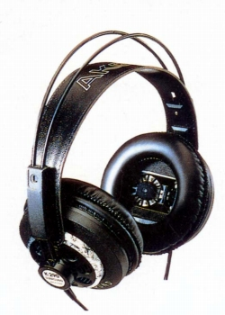
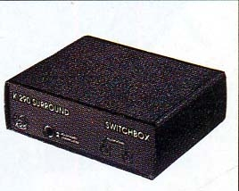

K290

■価格 26,000円
■型式 ダイナミック型 4chサラウンド/ステレオヘッドフォン
■振動板
■インピーダンス
150Ω（サラウンド）
75Ω（ステレオ）
■再生周波数帯域 20-20,000Hz
■許容入力 200mW
■感度 92dB/1mW
■コード 6m 8P専用コネクター
■重量 250g（コード含まず）
■発売 1996年1月
■販売終了1998年頃
■備考
K290SURROUNDが正式名称
スピーカー端子接続ケーブル、ミニプラグ付きケーブル、ミニ→標準変換プラグ付属
別売りのK290スイッチボックス(17,000円)でスピーカーシステムとの切替可能

上記価格データーはハーマンインターナショナル時代のもの、これより高い価格が設定されていた可能性あり